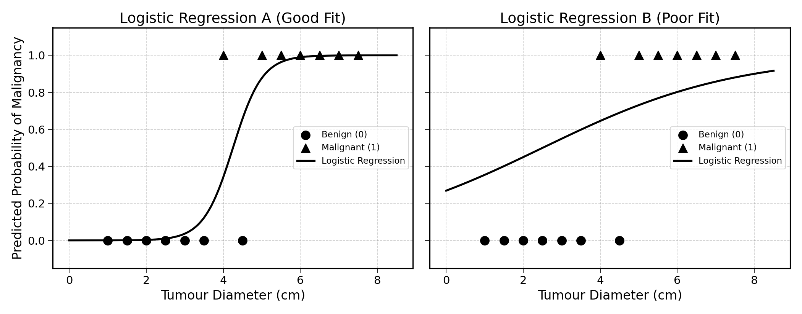
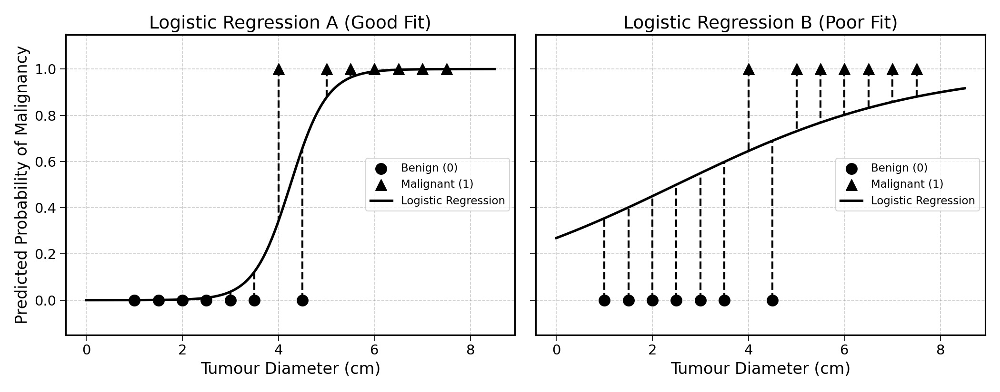
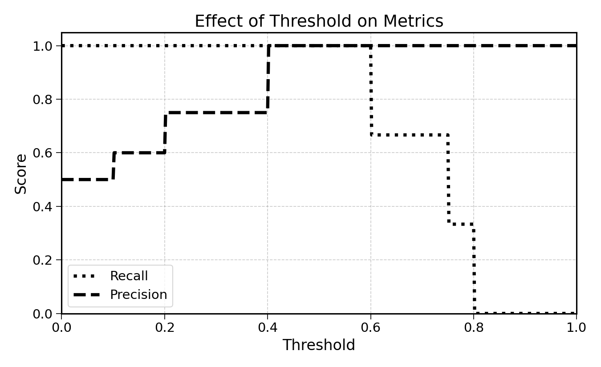

25 Evaluating Classification Models
Now, how do we know when a logistic regression generates accurate predictions? Like in the linear regression case, we could use the distance between predicted values and the actual values.
Looking at these two logistic regressions fitted on the tumour data from the previous chapter:

We see that logistic regression A is a much better fit. The error is measured by the distance between the data points and the curve:

Does it make sense to use the mean squared error (MSE) for this problem? Maybe, but we can do much better.
25.1 Scoring and Calibration
Imagine a model A predicting the probability of an email being spam at 90%, and a model B at 98%. The email is effectively spam. Yes, model B is better than A. But in practice, does this make a difference?
In a classification model, there are two components to errors:
- Scoring: is the model classifying observations correctly?
- Calibration: do the probabilities predicted by the model match reality?
Imagine we classify as “spam” all emails with a predicted probability of being spam of 60% or more.
In terms of scoring, both models A and B have a perfect score, as they correctly classify the email as spam. In terms of calibration, model B is better calibrated, as its predicted probability is closer to 1.
The following sections explore these two components in depth.
25.2 Scoring Predictions
We train two models: Model A and Model B. We now want to determine which of the two is best.
To do so, we remove a test set from the training data, and generate predictions using both models. For these observations, we also have the ground truth, the true label of each.
We get the following results by generating predictions for the test set:
| Observation | Model A | Model B | Truth |
|---|---|---|---|
| 1 | \(\times\) | \(\circ\) | \(\circ\) |
| 2 | \(\times\) | \(\circ\) | \(\times\) |
| 3 | \(\times\) | \(\times\) | \(\times\) |
| 4 | \(\circ\) | \(\circ\) | \(\circ\) |
| 5 | \(\circ\) | \(\times\) | \(\times\) |
Which of the models is the most accurate?
You could start by counting the number of errors of each model:
- Model A made two errors: observations 1 and 5
- Model B made one error: observation 2
In other words, Model A was correct three times out of five whereas Model B was correct four times out of five. Model B seems more correct on average.
More than just “three out of five”, we can say that Model A was correct 60% of the time. This metric is called the accuracy of a model.
\[ \text{Accuracy} = \frac{\text{Number of observations correctly predicted}}{\text{Total observation count}} \]
Exercise 25.1 Calculate the accuracy of Model B.
When you hear the words “model accuracy” in the media, this is it.
25.3 Beyond Accuracy: Recall and Precision
But is accuracy sufficient? To answer this question, we need to ask another question: Are all errors the same? Do they have the same consequences on the world?
To explore this, let us move beyond simple \(\times\) and \(\circ\) and into the world of tumour diagnosis. There, a benign mass misdiagnosed as a malignant tumour would generate stress and inconvenience. A malignant tumour misdiagnosed as benign could have fatal consequences.
Let us now consider the two following models, with \(\circ\) representing a benign mass and \(\times\) representing a malignant tumour:
| Observation | Model A | Model B | Truth |
|---|---|---|---|
| 1 | \(\circ\) | \(\circ\) | \(\circ\) |
| 2 | \(\circ\) | \(\circ\) | \(\circ\) |
| 3 | \(\circ\) | \(\times\) | \(\circ\) |
| 4 | \(\circ\) | \(\times\) | \(\circ\) |
| 5 | \(\circ\) | \(\times\) | \(\times\) |
| 6 | \(\times\) | \(\times\) | \(\times\) |
| 7 | \(\times\) | \(\times\) | \(\times\) |
| 8 | \(\times\) | \(\times\) | \(\times\) |
Exercise 25.2 Show that Model A has a higher accuracy than Model B.
Even though Model A has higher accuracy than Model B, it misclassified one malignant tumour as benign (Observation 5).
On the other hand, Model B classified two benign masses as malignant (Observations 3 and 4) but caught all the malignant tumours. If you were a patient, which model would you prefer?
This shows that accuracy is only a part of the picture. How can we move from the description above to actual metrics?
25.3.1 Useful Vocabulary
Before going into error metrics, it is important to introduce some vocabulary.
In binary classification, the model learns to assign observations into two categories, such as “benign” and “malignant” in the case of tumour diagnosis, or “spam” and “non-spam” for email filtering.
Mathematically, these two labels are represented as 1 and 0. Generally, the class that the model was built to detect is assigned 1 and the other 0. In tumour diagnosis, the malignant label is assigned the number 1 as these are the cases the model was designed for. Similarly, in email filtering, the label “spam” is assigned the number 1, as the model detects spam messages to filter them out of the inbox.
In the example of tumour diagnosis, a malignant tumour correctly classified as “malignant” is called a True Positive. On the other hand, a malignant tumour misclassified as a benign mass is a False Negative.
Here, the words “positive” or “negative” are not value judgements. They are simply another way to say 1 or 0. Thinking about medical examples may make more sense. When a medical test is positive, it means that the targeted substance is present. The same applies to spam detection. A positive spam detection means classifying an email as “spam”.
Going back to jargon, a True Positive is when the variable of interest is correctly detected (e.g., “spam” or “malignant”). A False Negative is when the variable of interest goes undetected. As an example, a malignant tumour is misdiagnosed as “benign”, or a spam email lands into the inbox.
Based on these, what would be a False Positive and a True Negative? Think about it in terms of tumours and spam emails before reading on.
- False Positive: model wrongly predicts the presence of the variable of interest, e.g., a legitimate email predicted as “spam”
- True Negative: model correctly predicts the absence of the variable of interest, e.g., a benign mass is correctly classified as a benign mass
These can be summarised in the following table:
| Predicted Positive | Predicted Negative | |
|---|---|---|
| Actual Positive | True Positive | False Negative |
| Actual Negative | False Positive | True Negative |
This is also called the confusion matrix.
To make this more concrete, this table could be adapted to the tumour diagnosis example:
| Predicted Malignant | Predicted Benign | |
|---|---|---|
| Actual Malignant | Malignant tumour correctly classified as “malignant” | Malignant tumour incorrectly classified as “benign” |
| Actual Benign | Benign mass incorrectly classified as “malignant” | Benign mass correctly classified as “benign” |
Or for spam filtering:
| Predicted Spam | Predicted Not Spam | |
|---|---|---|
| Actual Spam | Spam correctly classified as “spam” | Spam incorrectly classified as “not spam” |
| Actual Not Spam | Legitimate email incorrectly classified as “spam” | Legitimate email correctly classified as “not spam” |
Exercise 25.3 To test your understanding, try building a confusion matrix for a payment fraud detection model.
Now that we clearly understand the language of True/False Negative/Positive, let’s get back to measuring the performance of a logistic regression model.
25.3.2 Recall
In the example of tumour diagnosis, we would like a model that catches as many malignant tumours as possible. This is because False Negatives, i.e. misdiagnosing a malignant tumour as benign, can have fatal consequences. We want to compare the performances of Models A and B:
| Observation | Model A | Model B | Truth |
|---|---|---|---|
| 1 | \(\circ\) | \(\circ\) | \(\circ\) |
| 2 | \(\circ\) | \(\circ\) | \(\circ\) |
| 3 | \(\circ\) | \(\times\) | \(\circ\) |
| 4 | \(\circ\) | \(\times\) | \(\circ\) |
| 5 | \(\circ\) | \(\times\) | \(\times\) |
| 6 | \(\times\) | \(\times\) | \(\times\) |
| 7 | \(\times\) | \(\times\) | \(\times\) |
| 8 | \(\times\) | \(\times\) | \(\times\) |
Recall is the metric that answers the question: out of all the positive cases, how many did the model catch?
Rephrasing this for the tumour diagnosis example: out of all the malignant tumours, how many did the model catch?
This is calculated as follows:
\[ \text{Recall} = \frac{\text{Malignant tumours correctly detected by the model}}{\text{All malignant observations}} \]
Rephrasing this in terms of True/False Positive, we get:
\[ \text{Recall} = \frac{\text{True Positives}}{\text{True Positives} + \text{False Negatives}} \]
Calculating Recall for Model B:
\[ \text{Recall}_{\text{Model B}} = \frac{4}{4 + 0} = 100\% \]
Exercise 25.4 Calculate the recall of Model A, and prove that it is \(75\%\).
In the case of disease diagnosis, recall is a critical metric as missing positive cases can have dire consequences on a patient’s life.
25.3.3 Precision
In other scenarios, when the cost of a False Positive is high, we care for the precision of the model. In other words, we want to avoid False Positives; wrongly predicting the variable of interest.
Building a spam detection algorithm, the objective is to classify incoming emails as either “spam” or “non-spam”. Every email classified as “spam” would be filtered out of the inbox.
In spam filtering, False Positives can have serious negative consequences. Once, a recruiter’s email ended up in my spam folder. Without her reminder, I would have never worked at her company because of a spam filtering error.
Precision answers the question: Out of all the observations predicted as positive, how many were True Positives, i.e., actually positive?
For this reason, the most important metric here is precision: out of the messages classified as spam, how many were actually spam messages?
This can be computed as follows:
\[ \text{Precision} = \frac{\text{Number of emails correctly classified as spam}}{\text{Total number of emails classified as spam}} \]
Rephrasing this expression in confusion matrix jargon:
\[ \text{Precision} = \frac{\text{True Positive}}{\text{True Positive} + \text{False Positive}} \]
Looking at the example below:
| Observation | Model A | Model B | Truth |
|---|---|---|---|
| 1 | \(\circ\) | \(\circ\) | \(\circ\) |
| 2 | \(\circ\) | \(\circ\) | \(\circ\) |
| 3 | \(\circ\) | \(\times\) | \(\circ\) |
| 4 | \(\circ\) | \(\times\) | \(\circ\) |
| 5 | \(\circ\) | \(\times\) | \(\times\) |
| 6 | \(\times\) | \(\times\) | \(\times\) |
| 7 | \(\times\) | \(\times\) | \(\times\) |
| 8 | \(\times\) | \(\times\) | \(\times\) |
the precision of Model A is:
\[ \text{Precision}_\text{Model A} = \frac{3}{3 + 0} = 100\% \]
Exercise 25.5 Calculate the precision of Model B, show that it is approximately 67%.
25.3.4 Revisiting Accuracy
Accuracy, the first error metric explored in this chapter, can also be calculated with confusion matrix terms.
As a reminder, accuracy is calculated as follows: \[ \text{Accuracy} = \frac{\text{Number of observations correctly predicted}}{\text{Total observation count}} \]
Using the language of True/False Positive/Negative, it can be computed with the following formula: \[ \text{Accuracy} = \frac{\text{True Positive} + \text{True Negative}}{\text{Observation Count}} = {}\frac{\text{TP} + \text{TN}}{\text{TP} + \text{FP} + \text{TN} + \text{FN}} \]
This section described accuracy, recall, precision and the confusion matrix. It is now time to apply them to model selection; to choose the best performing model for a given task.
25.4 Practical Model Selection
After having built two different logistic regression models for predicting tumour diagnosis (A and B), you get the following confusion matrices:
Model A
| Predicted Malignant | Predicted Benign | |
|---|---|---|
| Actual Malignant | 40 | 10 |
| Actual Benign | 10 | 40 |
Model B
| Predicted Malignant | Predicted Benign | |
|---|---|---|
| Actual Malignant | 45 | 5 |
| Actual Benign | 5 | 45 |
Which model would you pick?
If you picked B, that is correct. Why did you choose it? B seems to make fewer errors and have a higher accuracy.
Exercise 25.6 If you have not done so already, compute the accuracy, precision and recall of both models.
Making this decision more complex, which of the following two models would you pick for a tumour diagnosis system?
Model A
| Predicted Malignant | Predicted Benign | |
|---|---|---|
| Actual Malignant | 48 | 2 |
| Actual Benign | 18 | 32 |
Model B
| Predicted Malignant | Predicted Benign | |
|---|---|---|
| Actual Malignant | 50 | 0 |
| Actual Benign | 20 | 30 |
If you picked B, that is correct again. Why did you choose Model B? In this case, Model B has the same accuracy and the highest recall. In the case of tumour diagnosis, this is probably the most important metric to look at. Model B did not predict a single malignant tumour as “benign”.
Would you pick a different model for spam detection? Probably, as precision becomes more important then. You do not want legitimate emails to end up in your spam folder.
Exercise 25.7 Calculate recall and precision for Models A and B.
25.5 Probabilities and Thresholds
For the sake of simplicity, this chapter has only considered binary predictions: either malignant or benign, either spam or non-spam.
As we have seen in the logistic regression chapter, classification models output predicted probabilities. Instead of simply predicting an observation as “malignant” or “benign”, the model outputs a predicted probability of malignancy.
To convert these probabilities to a binary label, a threshold of 0.5 is generally used. Any predicted probability beyond this threshold would be classified as “malignant”, otherwise, it would be classified as “benign”. For example, a predicted probability of 48% would be classified as “benign”, while a predicted probability of 51% as “malignant”.
The threshold can be any number between 0 and 1. The lower the threshold, the higher the number of positives. In the example of tumour diagnosis, this would mean a higher number of observations predicted as “malignant”. On the other hand, a higher threshold would lead to fewer positives. In the example of spam detection, this would lead to fewer emails classified as “spam”.
Let us show this with an example:
| Obs. | Predicted Probability | Threshold 0.3 | Threshold 0.5 | Threshold 0.7 | Ground Truth |
|---|---|---|---|---|---|
| 4 | 0.8 | \(\times\) | \(\times\) | \(\times\) | \(\times\) |
| 2 | 0.75 | \(\times\) | \(\times\) | \(\times\) | \(\times\) |
| 1 | 0.6 | \(\times\) | \(\times\) | \(\circ\) | \(\times\) |
| 5 | 0.4 | \(\times\) | \(\circ\) | \(\circ\) | \(\circ\) |
| 3 | 0.2 | \(\circ\) | \(\circ\) | \(\circ\) | \(\circ\) |
| 6 | 0.1 | \(\circ\) | \(\circ\) | \(\circ\) | \(\circ\) |
Which translates to the following confusion matrices:
Threshold 0.3
| Predicted \(\times\) | Predicted \(\circ\) | |
|---|---|---|
| Actual \(\times\) | 3 | 0 |
| Actual \(\circ\) | 1 | 2 |
Threshold 0.5
| Predicted \(\times\) | Predicted \(\circ\) | |
|---|---|---|
| Actual \(\times\) | 3 | 0 |
| Actual \(\circ\) | 0 | 3 |
Threshold 0.7
| Predicted \(\times\) | Predicted \(\circ\) | |
|---|---|---|
| Actual \(\times\) | 2 | 1 |
| Actual \(\circ\) | 0 | 3 |
The following chart shows the evolution of the different metrics as the prediction threshold increases:

Lowering the prediction threshold to 0.3 has the following effects:
- Increase in recall: with more observations predicted as “malignant”, recall can only increase or stay constant
- Decrease in precision: with more observations predicted as “malignant”, the risk of misclassifying observations as “malignant” increases
Exercise 25.8 Describe the effect of increasing the threshold on precision, recall and accuracy.
For tumour diagnosis, a lower threshold may make more sense. If an observation has a predicted probability of malignancy of 0.4, as a patient, I would still want further checks.
For spam filtering, a higher threshold could be preferred, to reduce the risk of a legitimate email being filtered out. You could filter out results only when they have a predicted probability of 0.8 or 0.9.
This example illustrates the precision/recall trade-off. Setting a higher threshold will increase precision and reduce recall. Setting a lower threshold will reduce precision and increase recall.
This trade-off is for a single model. The better the probabilities generated by the model, the higher the precision and recall will be for a given threshold. The topic of probability evaluation will be explained further in the calibration chapter.
The F1 score is a metric that combines precision and recall into a single number. It is calculated as:
\[ \text{F1} = 2 \times \frac{\text{Precision} \times \text{Recall}}{\text{Precision} + \text{Recall}} \]
The F1 score ranges from 0 to 1, where 1 indicates perfect precision and recall. It is the harmonic mean of the two, giving equal weight to both metrics. A high F1 score means that the model has both high precision and high recall.
25.6 Final Thoughts
This chapter has shown how to score a binary classification model. There are three steps to this process:
- Set aside a share of the training data as a test set
- Using the trained model, generate predictions on this test set
- Calculate performance metrics such as accuracy, recall, and precision
It is important to remember that there is no optimal performance metric. The best metric for a problem depends on the consequences of model error on the real world.
The next chapter will explore how to evaluate the quality of a model’s predicted probabilities, also called the model’s calibration.
25.7 Solutions
Solution 25.1. Exercise 25.1
\(\text{Accuracy of Model B} = \frac{4}{5} = 80\%\)
Solution 25.2. Exercise 25.2
Model A: Correct on observations 1, 2, 3, 4, 6, 7, 8 (7 out of 8). Incorrect on 5.
Model B: Correct on 1, 2, 5, 6, 7, 8 (6 out of 8). Incorrect on 3 and 4.
\(\text{Accuracy of Model A} = \frac{7}{8} = 87.5\%\)
\(\text{Accuracy of Model B} = \frac{6}{8} = 75\%\)
Solution 25.3. Exercise 25.4
Model A: Out of 4 malignant tumours (observations 5, 6, 7, 8), Model A caught 3 (6, 7, 8), True Positives. Missed 5, a False Negative.
\(\text{Recall}_{\text{Model A}} = \frac{3}{3 + 1} = 75\%\)
Solution 25.4. Exercise 25.5
\[ \text{Precision}_\text{Model B} = \frac{4}{4 + 2} = \frac{4}{6} \approx 67\% \]
Solution 25.5. Exercise 25.6
For Model A:
- TP = 40
- TN = 40
- FP = 10
- FN = 10
\(\text{Accuracy} = \frac{40 + 40}{100} = 80\%\)
\(\text{Precision} = \frac{40}{40 + 10} = \frac{40}{50} = 80\%\)
\(\text{Recall} = \frac{40}{40 + 10} = \frac{40}{50} = 80\%\)
For Model B:
- TP = 45
- TN = 45
- FP = 5
- FN = 5
\(\text{Accuracy} = \frac{45 + 45}{100} = 90\%\)
\(\text{Precision} = \frac{45}{45 + 5} = \frac{45}{50} = 90\%\)
\(\text{Recall} = \frac{45}{45 + 5} = \frac{45}{50} = 90\%\)
Solution 25.6. Exercise 25.7
For Model A:
- TP = 48
- TN = 32
- FP = 18
- FN = 2
\(\text{Precision} = \frac{48}{48 + 18} = \frac{48}{66} \approx 73\%\)
\(\text{Recall} = \frac{48}{48 + 2} = \frac{48}{50} = 96\%\)
For Model B:
- TP = 50
- TN = 30
- FP = 20
- FN = 0
\(\text{Precision} = \frac{50}{50 + 20} = \frac{50}{70} \approx 71\%\)
\(\text{Recall} = \frac{50}{50 + 0} = \frac{50}{50} = 100\%\)
Solution 25.7. Exercise 25.8
Increasing the threshold:
- Precision increases (or stays constant): fewer observations are predicted as positive, so only the most confident predictions remain, reducing false positives
- Recall decreases (or stays constant): with a higher bar for a positive prediction, the model is more likely to miss actual positive cases
- Accuracy: the effect on accuracy depends on the data; it may increase or decrease depending on the balance between gains in precision and losses in recall